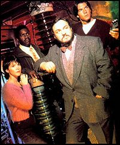

When I talk about parallel realities and “sliders,” I often refer to the Sliders TV series. It aired from 1995 through 2000, and was an innovator in presenting alternate history themes.
Sliders TV Series – Pilot
Here’s a preview from the movie-length pilot for the series.
Sliders TV Series
More information about the Sliders TV series, from Wikipedia:
Sliders is an American science fiction television series. It was broadcast for five seasons, beginning in 1995 and ending in 2000. The series follows a group of travelers as they use a wormhole to “slide” between different parallel universes.

The nature of the Sliders TV series changed throughout the seasons. The first two seasons focused on alternate histories and social norms, with the consensus amongst the creative team maintaining these two seasons to be largely superior to what would come later on during the series’ third season.These stories explored what would have happened, for example, if America had been conquered by the Soviet Union, if Britain had won the American War of Independence, if penicillin had not been invented, or if men were subservient to women.
(photo (c)1995, courtesy Universal Studios press kit)
The Sliders TV series was created by Robert K. Weiss and Tracy Tormé. Tormé, Weiss, Leslie Belzberg, John Landis, David Peckinpah, Bill Dial and Alan Barnette served as executive producers at different times of the production.
For its first two seasons it was produced in Vancouver, British Columbia, Canada. Sliders was filmed primarily in Los Angeles, California, USA in the last three seasons.
The first three seasons of the Sliders TV series were aired by the Fox Network. Originally canceled after the first season, the series was renewed after a fan protest.
After Fox canceled the show again after three seasons, the series moved to The Sci-Fi Channel for its final two seasons.
The last new episode first aired on December 29, 1999 in the United Kingdom, and was broadcast on The Sci-Fi Channel on February 4, 2000.
Main cast
* Quinn Mallory (seasons 1-4), played by Jerry O’Connell
* Wade Kathleen Welles (seasons 1-3, voice of Wade in “Requiem”, S5e11), played by Sabrina Lloyd
* Rembrandt Lee “Crying Man” Brown (seasons 1-5), played by Cleavant Derricks
* Professor Maximillian P. Arturo (seasons 1-3), played by John Rhys-Davies
* Maggie Beckett (seasons 3-5), played by Kari Wührer
* Colin Mallory (season 4), played by Charlie O’Connell
* Quinn Mallory (2) a.k.a. Mallory (season 5), played by Robert Floyd
* Diana Davis (season 5), played by Tembi Locke
Recurring Guest Stars
* Colonel Angus Rickman, played by Roger Daltrey (“The Exodus” parts 1 and 2 (S3e16–17)) and Neil Dickson (episodes “The Other Slide of Darkness”, “Dinoslide”, “Stoker” and “This Slide of Paradise” (S3e21, S3e23-25))
* Elston Diggs, played by Lester Barrie (episodes “Double Cross”, “The Dream Masters”, “Desert Storm”, “Dragonslide”, “Murder Most Foul”, and “The Breeder” (S3e2, S3e5-7, S3e13, S3e19))
* Doctor Oberon Geiger, played by Peter Jurasik (episodes “The Unstuck Man”, “Applied Physics”, and “Eye of the Storm” (S5e1-2, S5e17))
For many people — including me — the Sliders TV series was an introduction to alternate history and the idea of sliding from one reality to another.
Definitely one of my favorite series when I was younger! Talk about blast from the past! I was browsing my TV provider/employer DISH Network’s online site and found the first three seasons to watch all for free. It’s awesome!
You know it’s funny.. I have a very weird memory about Sliders…
I remember hearing about sliders from a friend of mine on a school bus. He was describing the pilot episode and the massive wasp on the guys back, etc. It seemed like an interesting show I should checkout, etc. And eventually I did watch it and was quite the fan..
However the situation of learning about the show on the school bus… I graduated from HS in 1991. But everything I read says sliders didn’t air until 1995.. At that point I was married, had a kid, working super long hours, etc. I had no contact with the person in my memory… But the memory feels like it happened.. But there is no way that it did.
That trailer seems to have a very different perspective from what I remember as a little kid. The premise I remember was a group who were travelling between worlds, and were actually lost, trying to find their way home. Also, there were no real “social norm” differences, each world was unique in some way or another. Different worlds didn’t have duplicates of people (why would they?), and I distinctly remember one world that controlled the destinations of the (multiple) slider devices. One the whole, I think the aesthetic of sliders from my memories more closely resembles the earlier Stargate series.
cont. Also, they were terrified that the slider devices would start counting up for some reason, and there was one world that used a fake slider (actually incinerating the occupants) as a sort of religious something or other. Also I loved this show.
Kayne I have similar Idea of that being the plot line. At the beginning they could return to the original place they started from but then at some point they got trapped and began sliding to all different sorts of worlds trying to get home.all the places they slid to had huge differences to the original place they came from and they had a portable device that created the sliding portal. My brother and I loved the show, it’s one that has always stuck in my mind. I may re-watch it now.
What about Dollhouse and 12 monkeys tv shows ?